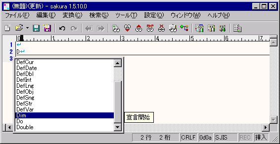

入力補完機能
現在のカーソル位置の左にある単語を補完します。
■入力補完機能を使うための準備
次のような、単語を列挙したテキストファイルを作成し、
タイプ別設定 『支援』プロパティ
で、単語を列挙したテキストファイルを設定します。
-----ここから-----
Apple
Orange
Strawberry
-----ここまで-----
■入力補完機能を使う
1
［Ctrl］を押しながら［/］を押したり、［Ctrl］を押しながら［Space］を押します。
入力補完が始まり、カーソル左側の単語を元に、補完候補が表示されます。
このとき、キーワードヘルプの設定されている単語であれば、対応するヘルプ文字列が脇に表示されます。
また
タイプ別設定 『支援』プロパティ
の「編集中のファイルから候補を探す」を設定すると、そのウィンドウで編集中のデータから、単語を選出して候補に加えます。
単語ファイルと併用する事ができます。
ヒント
・ 補完候補が一つの場合は、補完候補は表示されずに、補完されます。
・ サーチする時に英大文字小文字を区別するかどうかは、
タイプ別設定 『支援』プロパティ
で設定できます。
注意
・ \を入力して\で始まる単語を補完候補として表示することはできますが、\hを入力して\hogehogeをサーチすることはできません。これは、記号が入力されると単語の区切りとみなされるためです。
・ 補完候補が見つからない場合は、何も起こりません。
2
候補が表示されているときのキー操作は以下の通りです。
［↑］・［↓］・［Space］・［Shift］＋［Space］・［クリック］：補完候補を選択します。
［→］・［Enter］・［ダブルクリック］：選択した候補で補完します。
［Esc］：補完せずに、補完を終了します。
ヒント
補完確定キーは、
共通設定 『支援』プロパティ
で選択することができます。
注意
既に入力した部分も含めて補完されます。例えば、Apと入力してappleを選択して補完すると、appleとなります。
逐次入力補完は、現在廃止されています。
補完候補が表示されたところ

 ヒント
ヒント 注意
注意